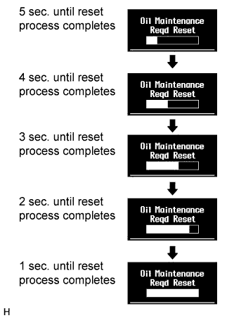
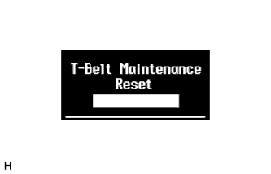
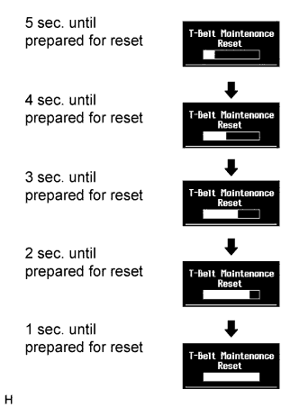
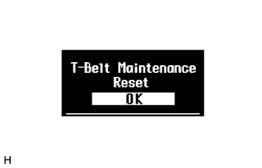
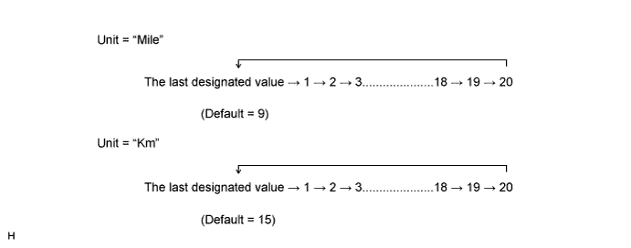
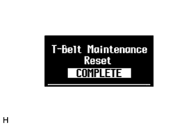
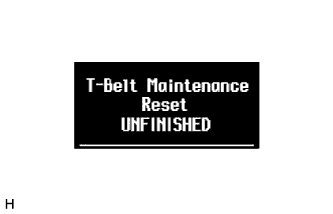
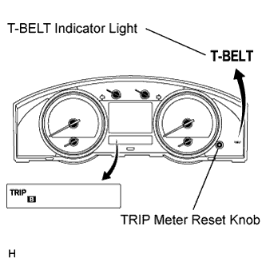

METER / GAUGE SYSTEM > INITIALIZATION |
| OIL MAINTENANCE INFORMATION MODE RESET OPERATION (for 1VD-FTV, w/ Multi-information Display) |
Turn the engine switch on (IG), and use the ODO/TRIP switch to change the screen display to TRIP A.
Turn the engine switch off.
While holding in the ODO/TRIP switch, turn the engine switch on (IG).
 |
After a 5 second count, reset will end
Reset flow chart
| TIMING BELT INFORMATION MODE RESET OPERATION (w/ Multi-information Display, for 2UZ-FE, for China, for General Countries, for Middle East) |
Turn the engine switch on (IG), and use the ODO/TRIP switch to change the screen display to TRIP B.
Turn the engine switch off.
 |
While holding in the ODO/TRIP switch, turn the engine switch on (IG).
 |
Press and hold the ODO/TRIP switch for 5 seconds or more.
 |
After the 5 second count finishes, "T-Belt Maintenance Reset OK" is displayed and T-BELT reset mode is complete.
While "T-Belt Maintenance Reset OK" is displayed, turn the ODO/TRIP switch from off to on.
After the ODO/TRIP switch is turned on, enter the setting mode and change to T-BELT display mode.
Change the set value by repeatedly turning the ODO/TRIP switch on and off (the value must be changed within 5 seconds). (procedure A)

When the display changes to the desired setting, press the ODO/TRIP switch for 5 seconds or more to finish setting mode. (procedure B)
 |
The set value is stored in the EEPROM, "T-Belt Maintenance Reset COMPLETE" is displayed (for 1 second), the buzzer (multi-display warning) sounds simultaneously, and reset mode is completed. (procedure C)
 |
| TIMING BELT INFORMATION MODE RESET OPERATION (w/o Multi-information Display, for 2UZ-FE, for China, for Middle East) |
 |
Turn the engine switch on (IG), and use the TRIP meter reset knob to change the screen display to TRIP A.
Turn the engine switch off.
While holding in the TRIP meter reset knob, turn the engine switch on (IG).
Press and hold the TRIP meter reset knob (on) for 5 seconds or more.
After the TRIP meter reset knob is turned off, turn the TRIP meter reset knob on again within 5 seconds.
After the TRIP meter reset knob is turned on, enter the setting mode and change to T-BELT display mode.
Change the set value in increments by turning the TRIP meter reset knob (the value must be changed within 5 seconds). (procedure A)
When the display changes to the desired setting, press the TRIP meter reset knob for 5 seconds or more to finish setting mode. (procedure B)
The ODO display area changes to the TRIP B display, the warning indicator turns off simultaneously and reset mode is completed. (procedure C)